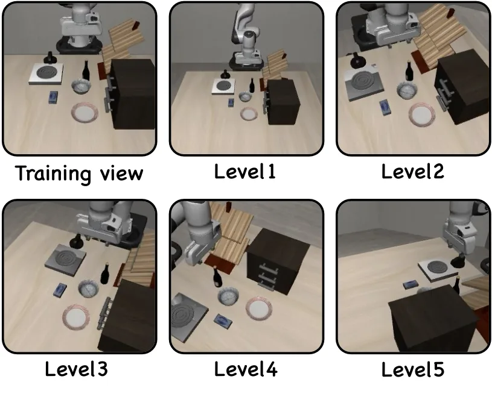
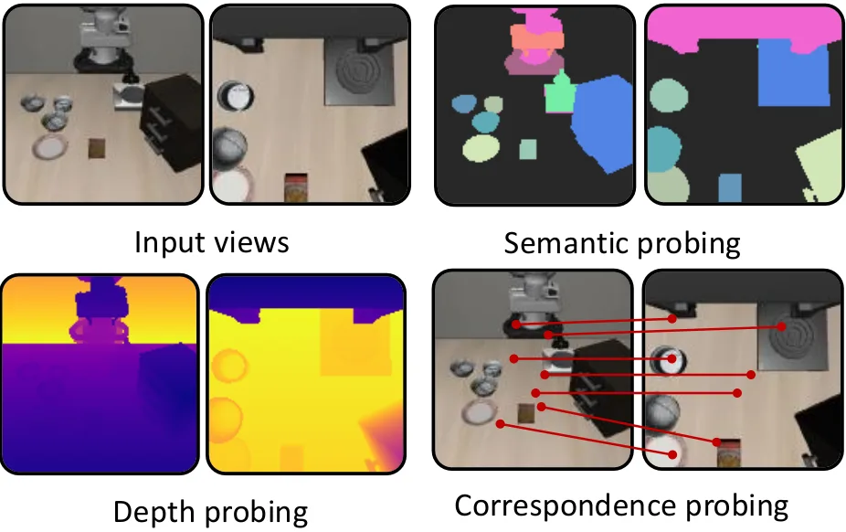
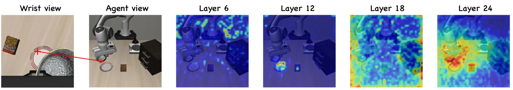
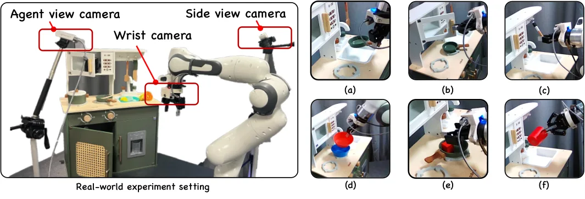
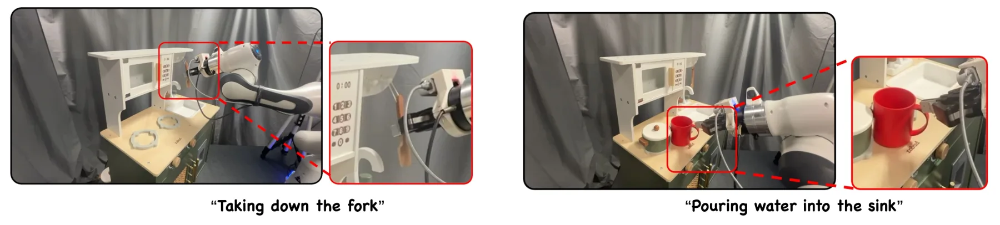

RIGID：用关系对齐把 3D 几何蒸进 VLA，同时不压扁语义表征
Relational Spatial Alignment for Vision-Language-Action Models
RIGID 先做一个诊断：把 VLA 的视觉 token 逐点对齐到冻结 VGGT 的特征（Spatial Forcing 一类做法），会让 VLA 特征的数值秩显著塌缩（effective rank 248.0 对 306.3，成功率 72.9% 对 85.2%），语义容量随之受损。作者改为对齐成对关系：学生用可学习 q/k 投影算多视图注意力图，教师取 VGGT 第 12 层的自/交叉注意力图，两者都视为 patch 网格上的分布，用 patch 坐标欧氏距离作传输代价、Sinkhorn 求熵正则 Wasserstein 距离，总损失为动作损失加 0.5 倍几何项。因为只约束关系不约束绝对方向，目标对正交变换不变。LIBERO 上平均 98.5%（与 Spatial Forcing 持平），LIBERO-Plus 四套件总平均 75.0%（Spatial Forcing 70.3%、π0 53.6%），并在 LIBERO-Probing 的深度 δ1.03（46.90 对 36.88）与分割像素准确率（96.94 对 96.82）上领先；训练开销相比 KL 版只多 8.0% 时间，推理时空间模块整体丢弃。
作者、单位与技术谱系 · Research context
作者与单位
研究脉络
- Spatial Forcing（Li et al., 2025, arXiv:2510.12276）方法上游（直接对照与出发点）关系：Spatial Forcing 用逐点特征对齐把 VGGT 的隐特征蒸进 VLA；RIGID 保留同一个教师—学生设定与同一个注入层，只把损失从点对点余弦改成注意力关系上的 Wasserstein，因此两者的差值就是“对齐方式”的净效应。[Spatial Forcing 原文（论文参考文献 [27]）]
- Relational Knowledge Distillation（Park et al., CVPR 2019）方法基座关系：RKD 提出用批内样本间的相对关系而非逐样本数值做蒸馏；本文把同一思想搬到跨模态、跨视图的特征对齐上，用 Gram 矩阵/注意力分布承载“关系”。[论文第 2 节相关工作（参考文献 [39]）]
- VGGT（Wang et al., CVPR 2025）方法基座（教师模型）关系：RIGID 直接使用冻结的 VGGT 作为 3D 教师，并取其中间层（第 12 层）的注意力图作为几何关系的载体；选择该层的依据是 VGGT 中层几何知识最强的既有观察。[论文第 3.2、4.4 节（参考文献 [50]）]
合作网络
- QMUL 的 IPALab 与项目页Chaoran Zhu / Chenglin Cui / Yazhe Wan / Changjae Oh（QMUL） → qm-ipalab.github.io/RIGID关系：项目归属（同单位项目页）[项目页]
- 跨单位共同署名边Hengyi Wang（UCL） → Taein Kwon（VGG, University of Oxford）关系：同篇论文共同署名[arXiv v1 首页 affiliation 行（TeX 源）]
- Spatial Forcing → RIGID 技术依赖边Spatial Forcing（Li et al.） → RIGID关系：基线复用与损失形式依赖[论文第 3.1、4.4 节]
- OpenVLA-OFT 与 π0-DROID 的训练基座边OpenVLA-OFT / π0-DROID 开源权重 → RIGID 仿真与真机模型关系：初始化权重依赖[论文附录 A 表 S1]
作者、单位与角色来自 arXiv v1 首页与脚注（星号注明共同监督/通讯）；谱系来自论文引用与实验设置，属于有来源的解读。未发现作者之间的导师/师生关系公开证据，因此网络图只记录共同署名、项目归属与权重/基线依赖。
方法本质拆解 · What actually changed
是不是微调？
是微调，但只动一小部分：仿真里 OpenVLA 7B 冻结主干，只训 LoRA（rank 32）、动作头与对齐投影层，共 30k 步；真机把 π0-DROID 3B 全参微调（全集 10k 步加任务内 1k 步）。教师 VGGT 全程冻结、不参与训练；EMA（β=0.999）用于稳定小 batch 训练，去掉后从 86.6 掉到 85.2。
有没有额外约束？
新增的是关系约束而不是数值约束：约束对象是每个 query token 在 patch 网格上的注意力分布，用 patch 坐标欧氏距离作传输代价，用 Sinkhorn 求 Wasserstein 距离；它不约束特征方向、范数或绝对坐标，因此对隐空间的正交变换不变。另有一个系数 β=0.5 控制几何监督相对动作损失的强度，β 过大（2.0）会压过动作信号。
推理/后端到底做了什么？
推理阶段什么都不加：空间对齐模块（投影层、Sinkhorn）全部丢弃，模型结构与 OpenVLA 或 π0 基线一致，输入仍只有多视图 RGB，不需要深度或点云。也就是说它不是推理时蒸馏，收益已经写进权重；代价集中在训练侧，相对 KL 版多 8.0% 时间。
方法本质是什么？
它改的是学生特征的“关系结构”而不是“绝对位置”：教师提供的不是每个 token 该长什么样，而是 token 之间该怎么相互注意；学生在自己的语义坐标系里满足这个关系即可，所以语义容量不被压扁。它没有引入显式 3D 表示，也没有在推理时做几何优化，因此对度量尺度与地图一致性没有直接约束。
输入多视图 RGB → 冻结 VGGT 提供注意力关系 → 用 Sinkhorn-Wasserstein 对齐 VLA 的注意力分布 → 在不压扁语义秩的前提下把几何关系写进策略权重，推理时零额外模块。

结论与问题Conclusion & Motivation
核心结论
RIGID 的核心结论是把“3D 知识蒸馏进 VLA”从点对点对齐改成关系对齐。作者先做了一个诊断：把 VLA 特征逐点对齐到 VGGT 特征，等价于在特征空间里施加低秩约束，VLA 的数值秩显著塌缩——点对点对齐的 effective rank 是 248.0，关系对齐是 306.3，而两者的策略成功率分别是 72.9% 与 85.2%。换成对齐注意力图（成对关系）之后，3D 感知保住了，语义容量也保住了：LIBERO-Plus 四套件总平均 75.0%，点对点对齐的 Spatial Forcing 是 70.3%，纯 2D 的 π0 是 53.6%。作者还证明这个目标对隐空间的任意正交变换不变，因此学生可以在自己的语义坐标系里满足几何关系，而不必把特征方向扭到教师那边。
动机与问题
VLA 要操作物体，必须知道东西在哪、离多远、朝哪边，但主流做法有两条都不理想的路。一条是把深度图或点云当额外输入（3D-VLA、PointVLA、GeoVLA 等），代价是依赖高质量传感器与预扫描环境，遇到反光、遮挡就退化。另一条是把 3D 基础模型的几何特征蒸进隐空间（Spatial Forcing、ROCKET、GLaD），不需要额外传感器，但机制没被讲清楚。作者问的是一个更尖锐的问题：直接特征对齐在注入空间感的同时，会不会破坏 VLA 预训练得到的语义与推理能力？他们给出的答案是会，并把这种破坏量化成特征秩的塌缩。
方法Method
方法总览
学生侧取 VLA 的视觉 token，对每一对视图用可学习 q/k 投影算注意力图 A_vla；教师侧用冻结的 VGGT，取同一对视图的自注意力与交叉注意力 A_3D 作为目标。两者都是“每个 query token 在 patch 网格上的分布”，于是把对齐写成一个最优传输问题：代价矩阵用 patch 网格坐标的欧氏距离，用 Sinkhorn 求熵正则 Wasserstein 距离，对所有视图对与所有 token 取平均得到几何损失。总损失是动作损失加 β 倍的几何损失（β=0.5）。因为只约束成对关系、不约束绝对方向与范数，目标对任意正交变换不变，这就是“旋转不变”的实际含义。
关键技术细节
实现上有几个具体选择。教师取 VGGT 第 12 层：作者对比 0/6/12/18/24 层，12 层成功率 86.6% 最高，与“几何知识在 VGGT 中层开始出现”的既有观察一致。学生侧 OpenVLA 取第 24/32 层注入，LoRA rank 32；真机用 π0-DROID 3B 全参微调、注入第 12/18 层。Sinkhorn 迭代 50 次，训练开销只比 KL 版多 8.0% 时间、0.09% FLOPs，显存不变（27.05 GB）。推理时整个空间模块被丢弃，模型与 OpenVLA 基线同构，因此没有额外推理成本。作者还比较了三种蒸馏目标：原始隐特征、Gram 矩阵、post-softmax 注意力图；Gram 在多数扰动下不差，但在相机扰动上只有 68.6%，注意力图版是 90.4%，作者解释为 VGGT 的 q/k 投影已经过滤掉与几何对应无关的信息。

实验Experiments
实验设置
仿真在 LIBERO 训练集上训练 30k 步（OpenVLA 7B 骨干、LoRA、2 张 H100、batch 16），在 LIBERO、LIBERO-Plus 和新提出的 LIBERO-Probing 上评测，LIBERO-Plus 未参与训练。LIBERO 按 Spatial/Object/Goal/Long 四个套件报成功率；LIBERO-Plus 按相机、机器人、语言、光照、背景、噪声、布局七类扰动报成功率，其中 Spatial 套件共 2,402 个 episode 用于组件消融。LIBERO-Probing 是作者新建的探针基准：重渲染 LIBERO 环境得到真值深度、52 类实例分割与跨视角对应，冻结 VLA 特征只训轻量 MLP 头，分别测像素准确率、δ1.25/δ1.03/REL 与 MPE/PCK10，并按任务而非按演示划分训练测试。真机是 Franka Panda 加腕部与侧视相机、15 Hz、6 个厨房任务、每任务 10 条演示（多任务全集 176 条），先在全集上微调 10k 步再任务内 1k 步，每任务 10 次试验，对照 π0 与 Spatial Forcing。
实验数字与比较
LIBERO（表 1）：Ours 平均 98.5（Spatial 99.6 / Object 99.8 / Goal 98.4 / Long 96.1），与 Spatial Forcing 的 98.5（99.4/99.6/98.8/96.0）持平，高于显式 3D 的 3D-CAVLA 98.1、GeoVLA 97.7 与 2D 的 π0 94.2。真正的差距出现在分布偏移下（表 2，LIBERO-Plus 四套件总平均）：Ours 75.0 对 Spatial Forcing 70.3、OpenVLA-OFT 69.6、π0 53.6；分类别看，相机 62.1 对 56.5、机器人状态 47.3 对 37.0、噪声 79.0 对 65.1、背景 94.1 对 90.8、布局 81.6 对 78.3，但语言扰动 80.3 对 84.6 反而更低。表征探针（图 4）：深度 δ1.03 46.90 对 36.88、REL 6.81% 对 8.05%、分割像素准确率 96.94 对 96.82；对应匹配 MPE 30.55 对 25.60（更差）、PCK10 0.33 对 0.29。秩干预（表 S2）：关系对齐 effective rank 306.3 且成功率 85.2%，点对点 248.0 且 72.9%；给点对点加秩正则升到 258.8 与 78.6%，给 RIGID 加塌缩正则降到 278.5 与 80.8%。
消融/失败边界
组件消融（LIBERO-Plus Spatial，2,402 episodes，30k 步）把增益拆得很清楚：直接特征对齐 78.2 → Gram 矩阵 83.9 → 只用交叉视图注意力 84.4 → 只用单视图注意力 84.9 → 两者合用（RIGID）86.6。也就是说关系对齐本身贡献约 5.7 点，单视图与交叉视图互补再贡献 1.7 点。损失函数上 Wasserstein 85.2 最优，KL 84.4、L1 82.7、MMD 81.0、MSE 78.5；作者指出 KL 在相机视角变化上明显更差，因为它对“小偏移”和“完全错位”罚得一样重。蒸馏系数是双刃剑：β=0.5 时 86.6，β=2.0 掉到 76.4；改成多头蒸馏也掉到 79.8。失败边界有三条：语言扰动上不如 Spatial Forcing（80.3 对 84.6），说明这套几何监督挤占了部分语言 grounding；教师层固定在第 12 层，换教师或换层需要重调；真机只有一台臂、一个厨房场景、每任务 10 次试验，统计功效有限。
局限与迁移Limitations & Transfer
局限与待核验
作者明确承认的限制是：训练时依赖预训练 3D 专家，蒸馏质量受教师能力与数据规模约束；VGGT 本身有已知偏差；机器人微调数据规模小，限制了迁移来的空间知识的多样性。我们的待核验项有五个：一是语言扰动退化只给了一个数字，没有做“几何 vs 语言”的权衡曲线；二是图 3 的逐级视角鲁棒性只有柱状图，正文没给每级数值，待核验；三是真机结果只有图 8 的柱状图，没有表格数字，待核验；四是项目页给出 qm-ipalab.github.io/RIGID，但论文正文未给代码仓库地址，开源状态待核验；五是秩与性能的因果只有双向正则这一条证据，作者自己也说不能把性能变化单独归因于秩。
与你研究路线的关系
这篇对你不是“又一个 VLA”，而是一个可迁移的正则化视角：当你把几何基础模型的特征或注意力接到另一个网络（不一定是 VLA，也可以是位姿回归头、深度补全头）时，逐点对齐会压掉学生网络的秩，改对齐成对关系能保住容量。第二个可迁移物是那个诊断工具：用 effective rank 或谱熵作为“蒸馏有没有把学生压扁”的体检指标，比只看下游任务指标更早发现问题。第三个是可复用的基准构造法：LIBERO-Probing 用重渲染拿真值深度、分割与对应，再冻结特征训轻量头，这套做法可以直接搬到 SLAM 数据集上做“特征里到底有没有几何”的检验。下一步实验建议：在自己的融合网络上做一个最小 A/B——同一教师、同一数据，比较逐点余弦对齐与 Gram/注意力对齐，同时测 effective rank 与下游 ATE；如果秩不掉而 ATE 也不掉，说明学生网络本来就没被压扁，不必引入关系对齐。







